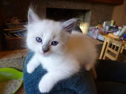

Go Back
Why do I like cats?
They have really cute, small, round faces with big eyes
They are silent and to themselves most of the time
What's not to love? They make me happy.

Favourite Facebook cat groups
patto ur catto (first ever group)
This Cat is C H O N K Y
Cats with Average Human Names
and many more...